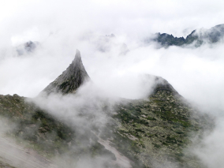
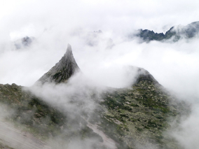

По опросам ВЦИОМ, 95% россиян мечтают куда-нибудь поехать,
но только 36% планируют провести отпуск в родной стране.
Мол, чего мы тут, дома, не видели? На самом деле,
Россия — это целая вселенная с ласковым морем юга,
густыми лесами Саян и суровыми льдами плато Путорана. А ещё
увидеть все эти красоты можно без миллионов на счету,
загранпаспорта и многочасовых перелетов. Как, например, Вера
Башмакова — смелая молодая мама, которая взяла
в охапку троих детей, усадила их в свою
«Ладу» и проехала 20 тысяч километров по родной
стране. Мы выбрали и описали некоторые интересные места,
достойные вашего отпуска.
Здесь, посреди лесов и песчаных дюн, вы сможете увидеть два водных
горизонта — спокойного Куршского залива с одной стороны и
подёрнутого рябью волн Балтийского моря с другой. Уникальная
природная зона на краю российского анклава.
На этом Калининградская область не заканчивается. Для
путешественника и исследователя там же по соседству — самая западная
точка России, Балтийская коса, — и немецкое наследие россыпи
небольших приморских городов. Атмосфера здешних мест исключает
суету, окуная в спокойствие природы и запах стального, прохладного
моря.
Почти весь полуостров находится за Полярным кругом. Саамская
тундра, от которой на юг — тайга,
а на север — Ледовитый океан, прикидывающийся
Баренцевым морем.
Возможно, вы смотрели Звягинцева и даже слышали историю
арктического фестиваля в Териберке. Возможно, слово
«Хибины» не осталось под снегом школьных
воспоминаний об уроках географии. Возможно, вы не
интересовались пронизывающей земную кору сверхглубокой скважиной, а
от апатитов вас давно накрывает апатия. Но ваша мечта
увидеть северное сияние начинает сбываться с билетом
в Мурманск.
Алтай — одно из красивейших мест в России.
В первую очередь из-за гор: если ехать вдоль хребта,
вы увидите склоны, усыпанные соснами, горные реки и озёра.
А если вы откроете в автомобиле окна, сможете
познакомиться с невидимым чудом здешних мест —
горным воздухом.
Климат на Алтае умеренный, поэтому ехать сюда лучше всего
летом. Так вы увидите всё разнообразие местной флоры
и фауны. По лесам Алтая бродят лоси, над хребтами летают
орлы, а на равнинах пасутся косули. И знаменитые
манулы — тоже обитатели Алтайского края.
Всем известен Байкал как крупнейшее озеро в мире. Многие также
знают, что это самый большой источник пресной воды и одно из
красивейших мест в России.
Конечно, это всё так. Но Байкал ещё идеальное место для
соревнований по скийорингу. Это такой вид спорта, когда лыжник
привязывает себя к мотоциклу, и тандем старается развить как
можно бóльшую скорость на льду. В марте 2019 года
на фестивале «Байкальская миля» был поставлен
мировой рекорд — 197.011 км/ч.
Сибирь заканчивается не на Урале, а в Карелии:
образующая тайгу сибирская лиственница не растёт западнее
Водлозера. Зато здесь она вымахивает
на 30 метров — леса карельских национальных
парков из-за непроходимых болот никогда не знали топора.
Некоторым соснам уже больше чем полтысячелетия. Прикоснитесь
к живому существу, видевшему солнце раньше, чем увидал его Иван
Грозный. В девственном лесу на сотню километров
не встретишь тропы. А на редких тропинках деревья в
паре метров от земли помечены медвежьими когтями. Чтобы все
знали, кто тут хозяин.


 
